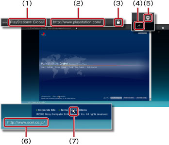
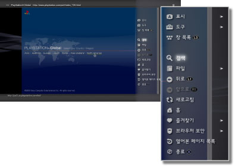
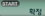

네트워크 > 인터넷 브라우저의 기본 조작
인터넷 브라우저의 기본 조작
화면 보기

(1) |
페이지 타이틀 |
|---|---|
(2) |
페이지 주소 |
(3) |
SSL 아이콘 |
(4) |
로딩 아이콘 |
(5) |
브라우저 보안 아이콘 |
(6) |
링크 대상 주소 |
(7) |
포인터 |
스크롤 방법
| 방향키 | 방향키를 누른 방향에 있는 링크로 포인터가 이동합니다. |
|---|---|
 버튼 + 방향키 버튼 + 방향키 |
페이지 단위로 스크롤합니다. |
| 오른쪽 스틱 | 원하는 방향으로 스크롤합니다. |
메뉴 사용하기
 버튼을 누르면 메뉴가 표시되어 다양한 조작이나 설정을 할 수 있습니다. 버튼을 누를 때마다 메뉴의 표시/숨기기가 전환됩니다. 브라우즈 모드와 윈도우 모드에서 메뉴 항목이 다릅니다.
버튼을 누르면 메뉴가 표시되어 다양한 조작이나 설정을 할 수 있습니다. 버튼을 누를 때마다 메뉴의 표시/숨기기가 전환됩니다. 브라우즈 모드와 윈도우 모드에서 메뉴 항목이 다릅니다.

주소(URL) 입력하기
START 버튼을 누르면 키보드가 표시되어 주소를 입력할 수 있습니다. 주소를 입력한 후에

를 선택하면 키보드가 종료하고 입력한 주소 페이지가 열립니다.텍스트 복사하기
웹 페이지 내의 텍스트를 복사할 수 있습니다.
1. |
왼쪽 스틱을 사용하여 포인터를 복사할 텍스트로 이동한 후 |
|---|---|
2. |
|
3. |
복사할 텍스트의 끝에서 |
4. |
표시된 메뉴에서 [복사]를 선택합니다. |
알아두기
- 복사한 텍스트는 온스크린 키보드가 표시되면 붙여넣을 수 있습니다.
- 4에서 [검색]을 선택하면 복사한 텍스트를 키워드로 인터넷 검색을 할 수 있습니다.
웹 페이지 인쇄하기
이 기능을 사용하려면 미리  (설정) >
(설정) >  (프린터 설정) > [프린터 선택]에서 프린터를 설정해 두어야 합니다.
(프린터 설정) > [프린터 선택]에서 프린터를 설정해 두어야 합니다.
1. |
인쇄하려는 웹 페이지를 표시하고 |
|---|---|
2. |
[파일] > [이 화면을 인쇄]를 선택합니다. |
3. |
인쇄 설정을 확인합니다. |
4. |
[인쇄]를 선택합니다. |
알아두기
사용할 수 있는 프린터의 기종은 국가나 지역에 따라 다릅니다. 상세한 사항은 각 지역 웹사이트를 참조해 주십시오.
복수의 창 열기
복수의 창을 동시에 열 수 있습니다. 포인터를 링크 위에 놓은 상태에서  버튼을 누르고 있으면 링크 대상 페이지가 다른 창에서 열립니다.
버튼을 누르고 있으면 링크 대상 페이지가 다른 창에서 열립니다.